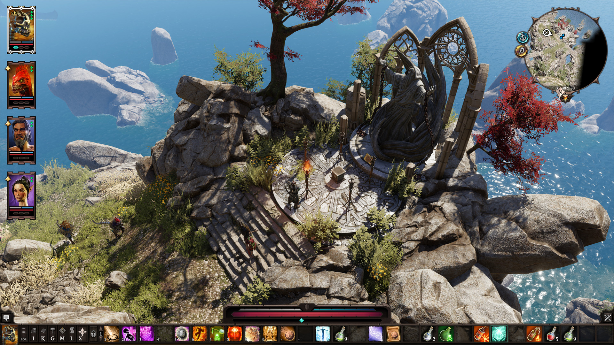

Retrospectiva săptămânii 26 august - 1 septembrie 2018
Retrospectiva săptămânii este rubrica duminicală în care trecem în revistă evenimentele săptămânii de pe frontul de gaming: știri şi articole (scrise de alții, bineînțeles, că e mai ușor aşa), industrie, lansări, oferte de jocuri, toate numai de savurat la cafeaua de duminică dimineața. (Și la care oricine poate contribui. 1 )
Ştiri
- Știrea săptămânii e cu siguranță publicarea primului gameplay video din Cyberpunk 2077. Video-ul a stârnit discuții aprinse și la noi pe forum. (Eurogamer)
- Google găseşte o vulnerabilitate de securitate în procesul de instalare al versiunii de Android a Fortnite, cea care, vă amintiţi, ocoleşte Google Play şi instruieşte utilizatorii cum să dezactiveze sistemele de protecţie ale telefonului pentru a instala jocul. Și, deși au fost notificați, Epic critică decizia Google de a o face publică. (Ars Technica, Eurogamer, Game Informer)
- Din seria de „ce jocuri mai înlătură loot boxes pentru Belgia şi Olanda”, Blizzard scot cutiuțele din Overwatch și Heroes of the Storm (Destructoid, Eurogamer). Nici 2K nu se lasă mai prejos și scot microtranzacțiile din NBA 2K. (Eurogamer)
- PEGI, comisia europeană care se ocupă cu acele game ratings pe care le vedeți pe cutiile jocurilor, anunță că în perioada următoare va introduce și avertismente privind uzul de in-game purchases al jocurilor. (gamesindustry.biz, Techraptor)
- S-a găsit și ultimul secret din Doom II. A durat doar 24 de ani. (RPS)
- Acțiunile EA au scăzut cu 10% după ce publisherul a anunțat că Battlefield V își amână lansarea. (PC Games Insider)
- CS:GO va avea și o ediție gratuită, care se poate juca exclusiv offline. (PC Gamer)
Articole (critică, dev, design)
- The greatest PC games you can play in 2018, as voted for by the PC Gamer team (PC Gamer)
- The Indie Post-apocalypse (Golden Krone Hotel blog)
- This Year, Dota 2 Gave Us A Cinderella Story for the Ages (Waypoint)
- Fantasy Games Are Better When They Don’t Focus On Magic (Kotaku)
- How to write an authentic world (GamesIndustry.biz)
- Ten surprising things battle royale can teach us (GamesIndustry.biz)
- After a rough few years, anti-tamper specialist Denuvo says things are “back on track” (PC Games Insider)
- What is an RPG? (Rempton Games)
- Centuries Ago The Dark Lord: when and how to dump (Gamasutra)
- Are RPG Maker games as bad as people think? (Eurogamer)
- The Videogame Industry Reaches for the Cloud (Barron’s)
Not-a-review
- (Unavowed) Off the Grid: Unavowed (Haywire Magazine)
- (Bioshock) Exploring BioShock eleven years later (Destructoid)
- (Rakuen) Helpful Moms and Rakuen (Unwinnable)
- (Deep Rock Galactic) Deep Rock Galactic (Unwinnable)
- (Bloodborne) Bullet Points – Bloodborne’s Insight (TechRaptor)
- (Portal) Portal was a classic from out of nowhere (GamesIndustry.biz)
- (One Hour, One Life) Skipping Steam: Why Jason Rohrer independently distributes One Hour, One Life (Gamasutra)
- (Exapunks) The Zachtronics devs discuss the essence of cyberpunk in Exapunks (Gamasutra)
Vocea industriei
- Elmar Fischer, Denuvo: “There is no uncrackable game. What we do is protect the initial sales” (GamesIndustry.biz)
- Brodie Andersen, Telltale Games: “We have let players down in the past” (Eurogamer)
- Yasuhiro Kitao, From Software: Why From Software chose Activision to publish Sekiro: Shadows Die Twice (GamesIndustry.biz)
- Jeep Barnett, Valve: Valve Is ‘Very Aware of All the Jokes’ People Make (IGN)
Istorie
- Retro computer games that Eastern Europe played as Iron Curtain fell (ZDnet)
- The Oral History of Treyarch’s Spider-Man 2: One of the Best Superhero Games Ever (US Gamer)
- The Twenty-Five-Year Journey of Magic: The Gathering (New Yorker)
- What is cyberpunk? (Polygon)
Dev, making of
- Game UX Style Guide: Why do you need one? (Gamasutra)
- How to make a good puzzle - An explorable explanation (Gamasutra)
- Make games and stay afloat: game marketing 101. (Gamasutra)
- The 10 Secrets to Indie Game Success (and Why They Do Not Exist) (Gamasutra)
- A Study Into Puzzle Design (Gamasutra)
- 50 things I learned from working in the game industry (Gamasutra)
- Where’s my money, dude: what Steam is silent about, partea a 2-a (Medium)
Design, world-building
- Skellige’s Costly Landscape (SlowRun)
- (Poze frumoase) The classic-style adventure game background art of Unavowed (PC Gamer)
Anunţuri şi lansări de jocuri
Anunţate
- Onimusha, un remaster al jocului din 2001 (Destructoid, Eurogamer)
- Streets of Rage 4 (Destructoid, Eurogamer)
- Subnautica: Below Zero, primul expansion pentru Subnautica (US Gamer, PC Gamer)
- Thronebreaker (PC Gamer)
- UnDungeon (RPS)
- Gato Roboto, un metroidvania monocrom (aka alb-negru) cu pisici (RPS)
- Cube Escape: Paradox, următorul titlu din universul Rustu Lake (RPS)
- Untitled Goose Game, un joculeț în care… dar mai bine urmăriți trailerul (RPS, Gamespot)
- Repentance, următorul (și ultimul) DLC pentru Binding of Isaac: Rebirth (Gematsu)
Lansate
- 27 august: Tower of Time (gog.com)
- 28 august: Donut County (Steam, gog.com)
- 28 august: Strange Brigade (Steam)
- 28 august: The Universim (Early Access) (Steam, gog.com)
- 28 august: Last Tide (Early Access) (Steam)
- 28 august: Need to Know (Steam, gog.com)
- 29 august: SCUM (Early Access) (Steam)
- 30 august: PRO EVOLUTION SOCCER 2019 (Steam)
- 30 august: Aggressors: Ancient Rome (Steam, gog.com)
- 30 august: The Messenger (Steam, gog.com)
- 30 august: Two Point Hospital (Steam)
- 31 august: Shadows: Awakening (Steam, gog.com)
- 31 august: Divinity: Original Sin 2 - Definitive Edition (Steam, gog.com)
Oferte jocuri
Humble Bundle
- Vă reamintim că următorul Humble Monthly se lansează vineri. Aveți până atunci timp la dispoziție să îl luați, deblocând Sniper Elite 4, Tales of Berseria și Staxel. Alternativ, puteți opta să deblocați Rise of the Tomb Raider în locul acestora.
- Este Summer Sale din nou pe Humble Store, cu o grămadă de reduceri și posibilitatea de a câștiga câteva jocuri gratuit. Câteva din highlight-urile noastre la reduceri sunt Darkest Dungeon (6,20€), Hollow Knight (8,90€), Day of the Tentacle Remastered (4,71€), Legend of Grimrock 2 (7,91€), Duck Game (4,67€), Cuphead (14,39€)
Steam
- Weeklong Deals. Câteva recomandări: seria Prince of Persia (Prince of Persia: The Sands of Time (3,39€), Prince of Persia: Warrior Within™ (3,39€), Prince of Persia: The Two Thrones (3,39€), Prince of Persia (3,39€)), Hexcells Complete Pack, CrossCells (0,89€), SquareCells (0,89€), Dex (2,99€), Din’s Curse (2,49€), Sky Rogue (9,99€), Tiny Troopers (0,89€), Teleglitch: Die More Edition (3,24€), Outcast - Second Contact (13,99€), Obulis (0,99€), Steamburg (5,99€), Space Colony: Steam Edition (2,99€)
- Vermintide 2 este free to play tot restul weekendului. Dacă vă place îl puteți lua redus la jumătate de preț, cu 13,99€.
gog.com
- The Bureau: XCOM® Declassified™, Virginia and more up to -90% : seria X-Com (aia veche) la 1,29€ fiecare, REVOLVER360 RE:ACTOR (2,59€), Brothers: A Tale of Two Sons (1,99€), ABZÛ (7,99€), Vaporum (10,39€), Rain World (8,69€), Kingsway (4,99€), Dungeon Rats (3,09€), The Age of Decadence (4,99€)
- Tharsis, BIT.TRIP, Smugglers V and more up to -90%: Tiny and Big: Grandpa's Leftovers (0,89€) , DROD 1+2+3 (2,59€) (și celelalte titluri DROD), Volgarr the Viking (1,79€), Unepic (1,29€), Wizardry 8 (1,79€), Driftmoon (1,99€), Richard & Alice (1,09€), Zafehouse: Diaries (0,89€), seria BIT.TRIP și altele
Green Man Gaming
- Ready Player Two!: Overcooked (aprox. 3,36€), Screencheat (aprox. 4,10€), Rocket League (aprox. 10,16€), Ultimate Chicken Horse (aprox. 8,32€), Paperbound (aprox. 4,26€), Fox & Flock (aprox. 0,41€), Mantis Burn Racing (aprox. 5,14€), Ogre (aprox. 11,5€)
Altele
- Indie Gala: Daedalic Entertainment Sale
- 6 jocuri reduse pe chrono.gg până pe 3 septembrie: Shadow Warrior 2 (13$), EVERSPACE (9$), Keep Talking and Nobody Explodes (7,50$), Tannenberg (12,50$), Hello Neighbor (15$), Startup Company (6,50$)
Recomandarea săptămânii: Divinity - Original Sin 2

Urmașul aclamatului Divinity: Original Sin a primit săptămâna asta ediția sa definitivă. În buna tradiție Larian, cine a cumpărat până acum versiunea inițială va primi gratuit și acest upgrade. Iar cine nu, ar face bine să și-l cumpere. Definitive edition vine cu o serie de optimizări și rebalansări, îmbunătățiri ale jurnalului și intefeței, dialoguri refăcute și multe altele. Totuși, aveți în vedere că save-urile din versiunea veche nu sunt compatibile cu cea definitivă.
Jocul se poate lua în acest moment cu o mică reducere (10%) de pe Steam sau GOG.
Pentru discuții pe marginea lui vă așteptăm pe forum.
- Dacă ai citit vreun articol sau vreo știre interesantă și crezi că merită inclusă în retrospectiva săptămânii, te așteptăm cu recomandarea ta pe forum, pe unul din topicurile dedicate: Știri, Articole, Gaming România, Oferte jocuri [return]